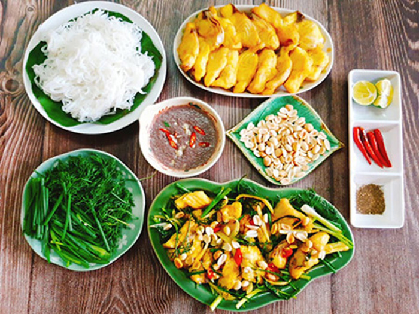
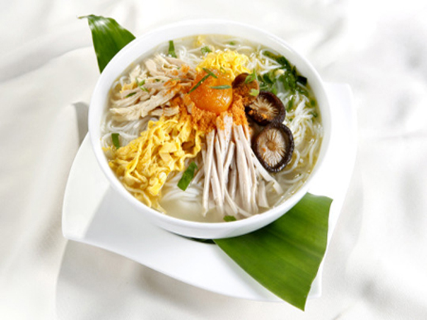

Bún chả Hà Nội
Hà Nội có rất nhiều món bún khác nhau, nhưng khi nhắc đến Bún, hầu hết mọi người sẽ nghĩ đến Bún Chả. Không ai biết rõ Bún Chả
có từ bao giờ,Chỉ biết là từ rất lâu rồi, Bún Chả đã xuất hiện trên khắp các nẻo đường Hà Nội và đi vào trong các tác phẩm văn
chương nổi tiếng.
Bún Chả thường có cùng một lúc 2 loại chả là chả băm và chả miếng. Chả băm được làm từ thịt nạc vai lợn băm thật nhuyễn nặn viên,
ớp trộn với muối, tiêu, nước mắm trên 35 độ đạm, đường, hành khô băm thật nhuyễn, dầu thực vật hoặc mỡ nước. Tùy vào độ tươi của
thịt, sau khi trộn gia vị nếu thấy thịt có vẻ hơi khô thì cho thêm một chút dầu sao cho miếng thịt dễ dàng kết dính khi vo nắn
thành miếng cỡ 2 ngón tay rồi nhấn cho hơi dẹp lại. Nếu thích cầu kỳ hơn thì gói ngang mỗi miếng chả là một lần lá chuối rồi mới
nướng, miếng chả sẽ không bị sạm và thơm hơn. Còn chả miếng thường dùng thịt ba chỉ (ba rọi) thái mỏng ướp gia vị tương tự chả viên
và nướng vàng trên than củi. Sau khi tẩm ướp, cả hai loại chả này có thể được nướng riêng hoặc nướng chung trong một kẹp thép trên
than củi hồng. Lò than phải nhỏ và trong lò chỉ có một ít than thôi. Như thế miếng chả sẽ được nướng vàng rộm, chín vừa vặn và ngậy
mùi.
Có thể nói, Bún Chà đã trở thành món ăn rất đỗi quen thuộc với Hà Nội trong cuộc sống hằng ngày, mang đậm nét văn hóa địa phương.
Ngày nay bún chả Hà Nội đã có mặt ở mọi nơi và được nhiều người ưa thích. Riêng với người Hà Nội, dù sống ở đâu cũng không bao giờ
có thể quên nổi món ăn truyền thống này.
Chả cá lã vọng
Nhắc đến các món ngon Hà Nội, không thể không kể tới chả cá. Chả cá ngon đến mức người ta đã lấy tên nó để đặt tên cho
một phố: phố Chả Cá thay cho phô Hàng Sơn cũ. Đầu thế kỉ XX, một người họ Đoàn ở phố Hàng Sơn đã chế biến ra món ăn này.
Để thu hút khách hàng, ông đặt bức tượng Lã Vọng ngồi câu trước cửa. Do đó mấ thành tên chả cá Lã Vọng. Cái tên ấy con
cháu ông còn giữ đến bây giờ
Nguyên liệu chính để làm chả cá là cá lăng, một thứ cá sông thịt dai và ngọt Không có cá lăng thì có thể thay bằng cá chiên
hay cá quả. Cá tươi mua về làm sạch, lóc bỏ xương rổi thái thành từng miếng nhỏ, Ướp với nước mắm ngon, mò, riềng và nghệ tươi
giã nát, lọc kĩ. Sau khi thịt cá đã thấm gia vị thì sắp vào cặp tre, buộc chặt hai đầu rồi nướng trên lò than hoa, lật đi lật
lại cho vàng đểu hai mặt là được. Gỡ chả cá ra bát rổi rưới mỡ hành phi thơm đang sôi vào.
Những ngày mưa lâm râm, khí trời se lạnh mà được ngồi cạnh bếp than hổng để ăn chả cá cùng gia đinh thì thật tuyệt! Đó là niềm
vui của người Hà Nội. Nay, món chả cá dâu đâu cũng có nhưng cái tên chả cá Lã Vọng đã trở thành một thương hiệu nổi tiếng không
chỉ ở Hà Nội, ở trong nước mà ở cả nước ngoài. Du khách phương xa về thăm Hà Nội, nếu muốn ăn chả cá thì hãy tìm đến quán chả cá
Lã Vọng, ăn một lần để nhớ mãi.Một món ăn không thể không thử một lần khi đến thăm Hà Nội.


Bún thang
Không rõ bún thang có từ bao giờ. Nhưng ở những năm đầu của thế kỷ trước, bún thang được xếp vào hàng món ăn chơi của dân
nhà giàu bởi muốn làm ra một bát bún thang đúng nghĩa phải rất tốn kém.
Nồi nước dùng cho món bún thang được chế biến công phu từ 1 - 2 con gà trống thiến, tôm he chính hiệu Thanh Hóa, ninh kỹ,
liên tục hớt bọt để tạo độ trong, ngọt và giữ chất đạm tự nhiên.Sự hấp dẫn của bún thang còn thể hiện ở cách trình bày. Bát
bún là sự hòa quyện của các nguyên liệu như một bức tranh đa sắc. Màu trắng tinh tế của giò lụa thái chỉ cùng những miếng lườn
gà xé phay. Màu vàng óng của trứng được tráng mỏng tang như tờ giấy hay da gà ta vàng ruộm. Màu đỏ của tôm he được giã bông như
ruốc. Màu xanh của hành lá. Tất cả những nguyên liệu ấy, màu sắc ấy, được bốc và bày gọn gàng lên trên bát bún rối sợi nhỏ, chan
với nước dùng thật sôi, khói bốc lên thơm mùi nấm hương, mộc nhĩ, khiến các nguyên liệu nở ra như một bông hoa ngũ sắc.
Bún thang được xem là món ăn tinh tế, chế biến cầu kỳ bậc nhất của người Hà Thành. Chẳng thế mà, trong cuốn “Miếng ngon Hà Nội”,
nhà văn Vũ Bằng đã miêu tả bún thang “giống như một bức tranh phong cảnh trong trẻo mà ở đó những mảng màu nguyên chất được đặt gần
nhau chứ không pha lẫn”.Bún thang có thể nói là một món ăn đặc trưng cho xứ kinh kỳ cố đô Hà nội , cô đọng những gì tinh túy nhất
của mảnh đất kinh kỳ ngàn năm văn hiến.